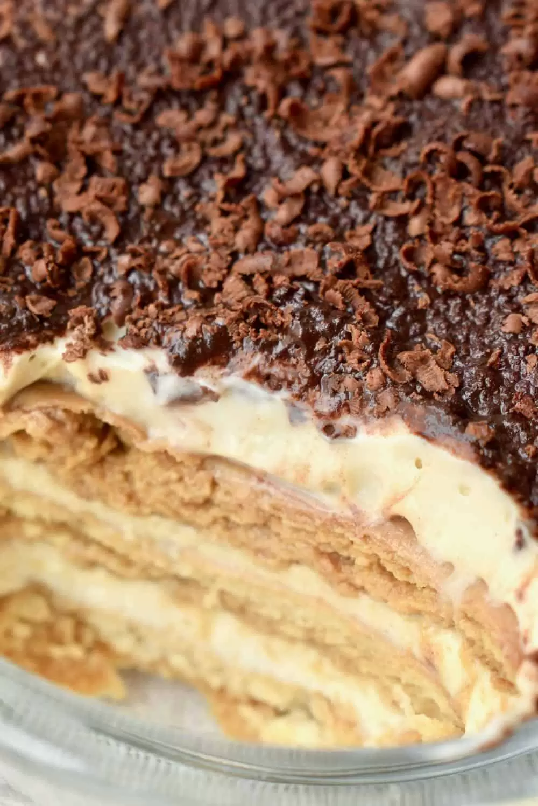

Vegan Tiramisu

Recipe Description
This vegan tiramisu recipe is quick and easy to follow and not overly complicated.
Ingrediants
- Silken tofu - 10.5 oz
- Coconut cream - 1/2 cup
- Sugar - 4tbsp
- Plain biscuits - 7 oz
- Unsweetened non-dairy milk - 1 1/2 cups
- Stong coffee/ expresso - 1 cup
- Dry fettuccine - 8 oz
- Cocoa powder - optional
- Dark chocolate - optional
Instructions
Preperation
- Refrigerate the coconut milk over night for better separation of the creamy and
liquid parts.
- Brew the coffee
For the Creamy Layer
- Briefly drain the silken tofu, and put it in a blender bowl
- Scoop off the creamy, fatty part from the top of a can of coconut
milk (about 150g per can). Add it (the creamy part) to the blender
- Add the sugar and blend until completely smooth
- Bring to a boil, the reduce to a simmer. Gentrly
Assembly
- Cover the bottom of your tiramisu dish in biscuits soaked in
coffee.
- Cover the biscuits with a layer of the creamy mixture
- Add more layers of biscuits and cream, finishing with a
layer of cream. How many layers you end up with depends
on the size dish.
- sing a fine sieve, sprinkle on cocoa powder, and grate some
dark chocolate on top.
- Refrigerate to let flavours blend and the tiramisu stiffen up.
For best results, chill for at least 8 hours.
This recipe is from Vegan On Board
Back to Recipe List